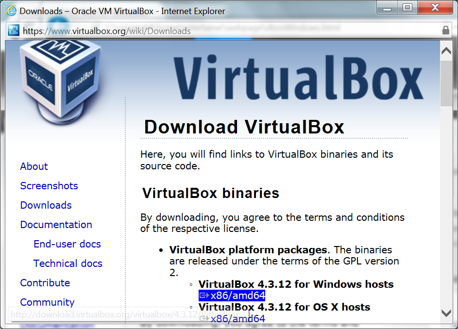
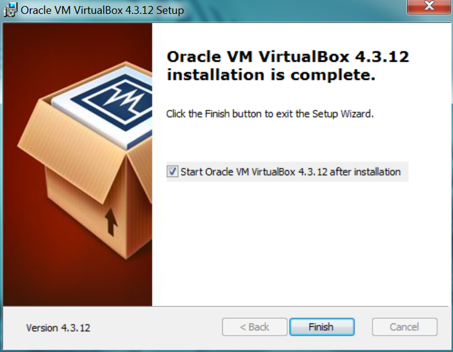

Installing Virtual Box in Windows
Virtual Box is installed just like most Windows programs. You download an installer and run it. The Windows install wizard takes you through the installation.
Mouse over the thumbnails on the left for step-by-step instructions and screen shots.

